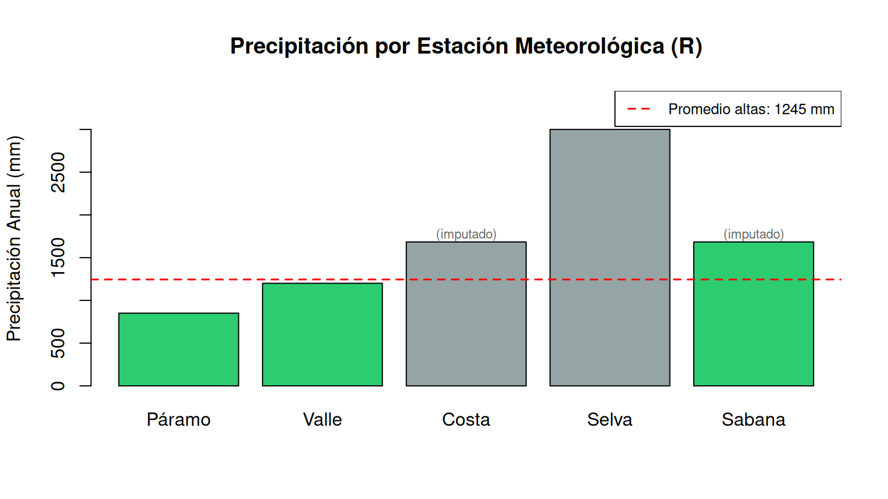

En este documento se resuelven los dos ejercicios propuestos en el Capítulo 11 del curso de Programación SIG, implementados en R utilizando operaciones vectorizadas nativas y el paquete dplyr para manipulación tabular.
Ejercicio 1: Vectorización y álgebra espacial (Haversine)
Construcción del DataFrame base
Construimos el DataFrame censal con las cuatro ciudades principales, tal como se hizo en la sección 11.7 del capítulo.
Ciudad Region Poblacion Latitud Longitud Elevacion
1 Bogotá Andina 7181469 4.7110 -74.0721 2640
2 Medellín Andina 2529403 6.2442 -75.5812 1495
3 Cali Pacífica 2227642 3.4516 -76.5320 1018
4 Barranquilla Caribe 1206319 10.9685 -74.7813 18
Función Haversine vectorizada
En R, las funciones trigonométricas (sin(), cos(), atan2(), sqrt()) son vectorizadas por defecto: al recibir un vector, operan sobre todos sus elementos simultáneamente sin necesidad de ciclos for. Esto permite aplicar la fórmula de Haversine directamente sobre las columnas completas del DataFrame.
calcular_distancias <-function(df, lat_ref =4.7110, lon_ref =-74.0721) {#' Calcula la distancia Haversine desde un punto de referencia (Bogotá)#' hacia todas las filas del DataFrame, de forma vectorizada.#'#' @param df data.frame con columnas 'Latitud' y 'Longitud'#' @param lat_ref Latitud del punto de referencia (grados decimales)#' @param lon_ref Longitud del punto de referencia (grados decimales)#' @return data.frame con columna adicional 'Distancia_Bogota' (km)# Radio medio de la Tierra en kilómetros R <-6371.0# Convertir grados a radianes (operación vectorizada sobre columnas completas) lat1 <- lat_ref * pi /180 lon1 <- lon_ref * pi /180 lat2 <- df$Latitud * pi /180 lon2 <- df$Longitud * pi /180# Diferencias vectorizadas dlat <- lat2 - lat1 dlon <- lon2 - lon1# Fórmula de Haversine aplicada element-wise sobre los vectores a <-sin(dlat /2)^2+cos(lat1) *cos(lat2) *sin(dlon /2)^2 c_dist <-2*atan2(sqrt(a), sqrt(1- a))# Distancia en kilómetros distancia_km <- R * c_dist# Agregar la nueva columna al DataFrame df$Distancia_Bogota <-round(distancia_km, 2)return(df)}
Ejecución y resultados
df_con_distancias <-calcular_distancias(df)cat("DataFrame con distancias desde Bogotá (km):\n\n")
Ciudad Latitud Longitud Distancia_Bogota
1 Bogotá 4.7110 -74.0721 0.00
2 Medellín 6.2442 -75.5812 238.67
3 Cali 3.4516 -76.5320 306.67
4 Barranquilla 10.9685 -74.7813 700.17
Verificación rápida
La distancia Bogotá–Bogotá debe ser 0 km, y las distancias a las demás ciudades deben ser coherentes con la geografía colombiana.
cat("\nVerificación de distancias:\n")
Verificación de distancias:
for (i inseq_len(nrow(df_con_distancias))) {cat(sprintf(" Bogotá → %s: %.2f km\n", df_con_distancias$Ciudad[i], df_con_distancias$Distancia_Bogota[i]))}
Bogotá → Bogotá: 0.00 km
Bogotá → Medellín: 238.67 km
Bogotá → Cali: 306.67 km
Bogotá → Barranquilla: 700.17 km
Ejercicio 2: Limpieza, filtros y agregación tabular
Paso 1: Creación del DataFrame con datos nulos
Creamos el DataFrame de estaciones meteorológicas. En R, el valor nulo estándar para datos faltantes es NA (Not Available), que es el equivalente a np.nan en Python o missing en Julia.
# Creación del DataFrame con datos nulos (sensores fallidos en Costa y Sabana)df_estaciones <-data.frame(Estacion =c("Páramo", "Valle", "Costa", "Selva", "Sabana"),Elevacion =c(3200, 1500, 15, 200, 2600),Precipitacion =c(850.5, 1200.0, NA, 3000.5, NA))cat("DataFrame original (con datos nulos):\n\n")
DataFrame original (con datos nulos):
print(df_estaciones)
Estacion Elevacion Precipitacion
1 Páramo 3200 850.5
2 Valle 1500 1200.0
3 Costa 15 NA
4 Selva 200 3000.5
5 Sabana 2600 NA
cat(sprintf("\nValores nulos en Precipitacion: %d\n", sum(is.na(df_estaciones$Precipitacion))))
Valores nulos en Precipitacion: 2
Paso 2: Imputación de valores nulos
Los sensores de la Costa y la Sabana fallaron. Rellenamos los valores nulos con la media de las estaciones que sí tienen datos válidos.
Se usa na.rm = TRUE en mean() para que R ignore los NA al calcular el promedio. Luego, ifelse(is.na(...)) reemplaza únicamente los valores faltantes, sin alterar los datos válidos existentes.
library(dplyr)# Calcular la media de precipitación ignorando NAsmedia_precipitacion <-mean(df_estaciones$Precipitacion, na.rm =TRUE)cat(sprintf("Media de precipitación (estaciones válidas): %.2f mm\n\n", media_precipitacion))
Media de precipitación (estaciones válidas): 1683.67 mm
# Imputar los valores nulos con la media calculadadf_estaciones <- df_estaciones %>%mutate(Precipitacion =ifelse(is.na(Precipitacion), media_precipitacion, Precipitacion))cat("DataFrame después de imputación:\n\n")
Extraemos un nuevo DataFrame con solo las estaciones cuya elevación sea estrictamente mayor a 1000 metros. Usamos filter() de dplyr, que internamente aplica indexación booleana vectorizada, más legible que un for con condicionales.
Paso 4: Cálculo final – Precipitación promedio en estaciones altas
precipitacion_promedio_altas <-mean(estaciones_altas$Precipitacion)cat(sprintf("\nPrecipitación promedio anual en estaciones altas: %.2f mm\n", precipitacion_promedio_altas))
Precipitación promedio anual en estaciones altas: 1244.72 mm
Visualización complementaria
Generamos un gráfico de barras con barplot() de R base para comparar la precipitación entre estaciones.
# Colores: verde para estaciones altas, gris para las demáscolores <-ifelse(df_estaciones$Elevacion >1000, "#2ecc71", "#95a5a6")barras <-barplot( df_estaciones$Precipitacion,names.arg = df_estaciones$Estacion,col = colores,main ="Precipitación por Estación Meteorológica (R)",ylab ="Precipitación Anual (mm)",ylim =c(0, max(df_estaciones$Precipitacion) *1.15))# Línea de referencia: promedio estaciones altasabline(h = precipitacion_promedio_altas, col ="red", lty =2, lwd =1.5)legend("topright",legend =sprintf("Promedio altas: %.0f mm", precipitacion_promedio_altas),col ="red", lty =2, lwd =1.5, cex =0.8)# Anotar estaciones imputadasidx_imputadas <-which(df_estaciones$Estacion %in%c("Costa", "Sabana"))text(x = barras[idx_imputadas],y = df_estaciones$Precipitacion[idx_imputadas] +80,labels ="(imputado)", cex =0.7, col ="gray40")

Comentarios sobre decisiones de diseño
¿Por qué imputar con la media usando na.rm = TRUE? En R, si no se especifica na.rm = TRUE, la función mean() retorna NA cuando hay al menos un valor faltante en el vector. Esto es un comportamiento de diseño intencional: R fuerza al analista a tomar una decisión explícita sobre cómo manejar los datos incompletos. Imputar con la media es la técnica más simple cuando no se dispone de información espacial adicional. En un flujo SIG real, se podría usar interpolación IDW o Kriging con las coordenadas de las estaciones.
¿Por qué dplyr::filter() en lugar de indexación base? Ambas alternativas son válidas. La sintaxis df[df$Elevacion > 1000, ] (R base) logra lo mismo que df %>% filter(Elevacion > 1000) (dplyr). Se eligió dplyr porque el operador pipe (%>%) facilita la lectura secuencial del flujo de transformaciones, especialmente cuando se encadenan múltiples operaciones (filtrar, agrupar, resumir).
¿Por qué la Haversine funciona vectorizada sin paquetes extra en R? A diferencia de Python (donde se necesita NumPy para vectorizar operaciones matemáticas sobre arreglos), en R las funciones aritméticas y trigonométricas son vectorizadas de forma nativa. Los vectores numéricos (c()) son ciudadanos de primera clase del lenguaje, y operaciones como sin(vector) o vector * pi / 180 se aplican automáticamente a cada elemento sin necesidad de importar librerías adicionales.